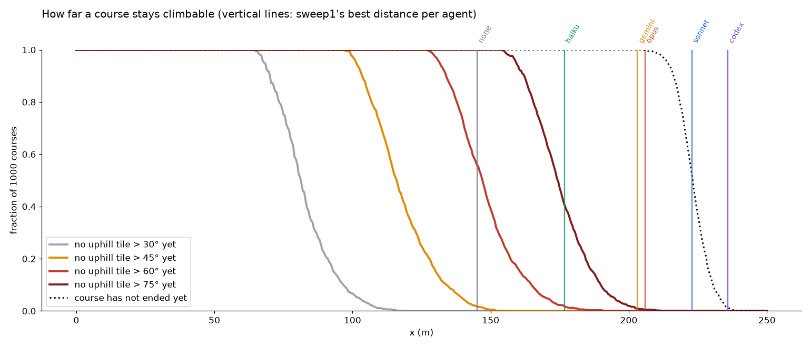

Given 30 minutes and 1,000 attempts to design and drive a 2D car over rough terrain, GPT-6.1 Sol, Opus 5.5 and GPT-6.1 Terra each got about 2.4 km. Haiku 5.5 got 0.4 km, and Sonnet 5.5 spent its attempts before it found a car that worked.
Each agent's 30-minute run, sped up. Left of each cell: the car it is trying at that moment. Right: its best run so far, driving. Right panel: furthest distance so far.
The car and the terrain come from Rafael Matsunaga's HTML5 Genetic Algorithm 2D Car Thingy (I read this copy), itself after BoxCar2D. It evolves random two-wheeled shapes into cars with a genetic algorithm, on the Box2D physics engine. I ported its physics to run headless, kept its car, terrain generator and stall rule, and replaced the genetic algorithm with a coding agent.
The task
The agent runs in a sandbox with a shell and a Unix socket to the simulator. Every tick it can read the chassis position, angle, velocity and angular velocity, plus one number: the height of the ground 2 m ahead. At any tick it can change the car: chassis shape, where the wheels attach, wheel size, weight and grip, and each motor's speed and torque. It cannot steer or brake. A reset starts a new random course from the beginning.
Time inside the simulator is free. Nothing moves unless the agent steps it, it can run eight courses in parallel, and it can step thousands of ticks at once, so it can test ideas much faster than real time. Attempts are limited: 1,000 episodes per run, counting every course driven, resets included. The reward is the furthest any car got, in any episode, during the 30 minutes.
Two ways to build a car
In the original car, the design space is cawro's: an eight-vertex chassis, two wheels, and their sizes, weights, positions and motors. In the free design, the agent can build a chassis of 3–16 vertices, put 1–4 wheels anywhere on it, give each wheel spring suspension, and carry a ballast weight that it can slide around inside the car while driving.
| Model | Free design | Original car |
|---|
| GPT-6.1 Sol | 2,424 m | 1,624 m |
| Opus 5.5 | 2,392 m | 2,047 m |
| GPT-6.1 Terra | 2,357 m | 1,462 m |
| Gemini 4 Argon | 2,086 m | 2,418 m |
| Grok 4.7 | 1,368 m | 571 m |
| Haiku 5.5 | 423 m | 1,195 m |
| Default car, no agent | 239 m | 244 m |
| Sonnet 5.5 | 138 m | 1,046 m |
The default car is a script that runs the starting car, unchanged, through its 1,000 episodes as fast as possible: the distance course luck alone gets you.
The same view for the original car.
What they built
- Sol and Terra hung the weight below the car. Both took the full 200 kg of ballast and put it under the chassis, outside the body, like a keel, on large overlapping wheels. A low centre of mass is hard to flip.
- Opus built a skid and a controller. On the original car it shrank the body to a small top over a long, low frame with the wheels on its bottom corners. Then it wrote a three-mode driver: hold the pitch steady while driving; when stuck, back up; then charge the obstacle. Its best episode changed the motor speeds about 7,000 times. On the free design it added a third wheel and the ballast.
- Grok was the only one to use suspension, on four sprung wheels.
- Haiku and Sonnet barely changed the car's shape. They tuned the default car's numbers. In the free-design run, Sonnet spent about 890 of its 1,000 episodes on one near-default car, at a median of 3 m each, before noticing.
- Gemini used few attempts. On the original car it won with 193 of its 1,000 episodes, and kept improving until near the end of both runs.
Making the original game into a benchmark
On the original page every course gets steeper with distance by design. Over 1,000 courses, the first uphill tile steeper than 75° comes at a median 174 m, and the course ends at about 223 m. My first version used those courses, and every agent finished between 176 and 236 m, so it was measuring where the course ended.

Original courses: the fraction still free of an uphill tile steeper than 30°, 45°, 60° and 75°, and of courses not yet ended, against distance. The vertical lines are where the first version's agents got to.
Three changes made it a benchmark:
- Longer, steadier courses. 2,000 tiles of 1.5 m. Every tile at a given distance is about equally steep (±30%), tilted up or down at random: 0.45 rad at the start, rising to 1.0 rad at 3 km. Difficulty depends on distance, not on drawing a lucky course.
- Tipping past 90° is a crash. Without it, the best car was simply every motor at full power. With it, full power flips the car at the start, and the motors become a way to control pitch.
- 1,000 episodes. With unlimited attempts, Haiku 5.5 ran a random search over the car's settings for about 12,000 episodes and its luckiest run came within 1.5× of Opus's. Over the first 1,000 episodes of the same runs, the gap was 4.6×.
Caveats
- One run per model per design space. Run to run, it moves a lot. Haiku got 340 m and 1,195 m in two runs of the same setup. I would want three runs each before trusting the order of the top four.
- Agents ran in Docker containers with no web access, each with 4 CPUs, and each simulator was capped at 3 cores. A model that stopped early was resumed with the same nudge, until its episodes ran out. Grok cost $1.52 and $0.60 for its two runs.
- The old Box2D port could hang forever when a car was rebuilt while overlapping the ground. I capped that loop, a one-line change to the vendored engine; ordinary runs are unchanged.
Code: terrain-bench.